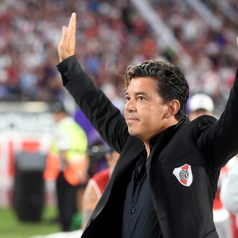

El primer partido de la llave,
programado para el 10 de noviembre a las 17 horas en La Bombonera, se suspendió horas antes debido a
las
condiciones meteorológicas, tras una jornada de intensas lluvias en Buenos Aires y se reprogramó para
el día
siguiente.
El segundo partido, programado para el 24 de noviembre a las 17 horas, fue suspendido por la agresión
de
hinchas y barrabravas del Club Atlético River Plate hacia los jugadores del Club Atlético Boca Juniors
que
llegaban en autobús al estadio Monumental, los mismos fueron agredidos con piedras y demás elementos
que
dañaron gravemente tanto el ómnibus del plantel como a los mismos jugadores, por lo que luego de
varias horas
se dio por suspendido el partido hasta nuevo aviso. Los mismos reclamaban los puntos y no aceptaban
jugar la
final.
El 29 de noviembre, la Conmebol informó que el partido se
jugaría el 9 de diciembre en el Estadio Santiago Bernabéu de Madrid, siendo la primera vez en la
historia que
un encuentro de la Copa Libertadores se disputaría fuera del continente americano. Lo mismo permitio
que ambas hinchadas pudieran asistir al encuentro, ya que en el pais esta prohibido.
El día 9 de Diciembre, el peor día en la historia de boca, River anoto el
primer gol fue anotado por Lucas Pratto (el oso) el delantero le puso el toque final a una genial
jugada colectiva entre Nacho Fernández y Exequiel Palacios, que incluyó un pase de taco y caño del
mediocampista juvenil.
El segundo fue anotado por Juan Fernando Quintero, Una obra de arte. En tiempo suplementario, el
colombiano se acomodó en la puerta del área y sacó un zurdazo magnífico que se metió en el ángulo
izquierdo de Esteban Andrada.
Y por ultimo y uno de los más gritados fue anotado por el Pity Martínez,con todo Boca en el campo de
River para buscar un empate que nunca iba a llegar. Luego de una salida en un tiro de esquina y un
pase de Juan Quintero, el 10 corrió solo y se metió con pelota y todo para desatar la alegría
riveprlatense.

Marcelo Gallardo está marcando una era en River. El Muñeco es reconocido a
nivel local e internacional: ahora fue nominado por tercer año consecutivo para el premio al mejor DT
de América. Sin embargo, el técnico prefiere destacar el trabajo de sus dirigidos en todo este tiempo.
En River se consagró campeón en múltiples ocasiones, sumando en total ocho
títulos. Estos fueron los Torneos Apertura de 1993, 1994 (campeón invicto), 1996 y 1997, los Torneo
Clausura de 1997 y 2004, la Copa Libertadores de 1996 y la Supercopa Sudamericana de 1997.
El primer título que ganó Gallardo no sólo significó la vuelta al plano
internacional después de 17 años de sequía, sino también la consagración de un semestre que arrancó
con un fútbol deslumbrante por parte de sus dirigidos. River venía de ser campeón con Ramón Díaz y,
aunque perdió el bicampeonato local a manos de Racing, logró eliminar a Boca por primera vez en el
ciclo y coronó el año ganándole la final al duro Atlético Nacional de Colombia.